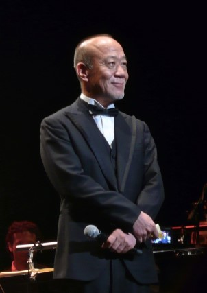

Level-5 collaborated with Studio Ghibli to produce the game's animated sequences, and the game features graphics and visuals replicating the traditional animation style of Studio Ghibli films. The collaboration began when musician Naoya Fujimaki, who had previously worked with both companies, introduced Level-5 president Akihiro Hino to Studio Ghibli president Toshio Suzuki. At the time, Studio Ghibli had completed work on Ponyo (2008), and the animation team had no ongoing projects, which influenced Suzuki's decision to collaborate with Level-5. Another influencing factor of the collaboration was witnessing Hino's passion for the project. Studio Ghibli approached the production process in the same way that they would create an animated film. Work on the animation began in July 2008, and took much longer than the predicted three months.
Studio Ghibli's Yoshiyuki Momose served as the director of animation, drawing character designs and storyboards. Hino wished Dominion of the Dark Djinn and Wrath of the White Witch to have a heartwarming feel; the artwork and character movements was greatly inspired by Studio Ghibli's work, particularly due to their attention to detail, as well as their talent in creating storyboards and utilizing camera control. The development team constantly watched Studio Ghibli's films during development. The team wanted the theme of the game to resonate with children; they initially considered the idea of expressing adventure and dreams. They later explored the concept of a child's greatest influence, their mother, and the possibility of losing them. The game's main playable character, Oliver, is a 13-year-old boy. The team decided to make him a child as they wished to showcase a coming of age story. They wanted children to empathize with Oliver's development, and adults to relive the excitement of their adolescence.
When Studio Ghibli agreed to produce the animated sequences of Ni no Kuni, they contacted Joe Hisaishi (pictured to the left) to work on the game's music. Hisaishi, who previously worked with Studio Ghibli on films such as Princess Mononoke (1997) and Spirited Away (2001), met with Hino. After witnessing Hino's passion for the project, Hisaishi agreed to work on the game's soundtrack. Rei Kondoh also created background music for the score, and all in-game music was performed by the Tokyo Philharmonic Orchestra. "Kokoro no Kakera", the theme song for Dominion of the Dark Djinn and Wrath of the White Witch, was written by Hisaishi; his daughter Mai Fujisawa performed the song in Japanese, while chorister Archie Buchanan performed the English version. The team found great difficulty in selecting a performer for the English version, though ultimately settled upon Buchanan due to his ability to convey the "vulnerability and innocence" of the game's characters in a "moving and powerful performance". For the orchestral music to fit onto the Nintendo DS at a high quality, Ni no Kuni: Dominion of the Dark Djinn was shipped on a 4-gigabit game card.
All image and game content is owned by their respective creators.